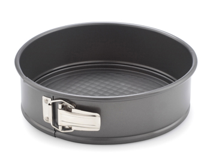

Ingredients/Recipe
How to Bake a Cake
Step 1: Pre-heat
Step 2: Butter Tin
Step 3: Break Up
Step 4: Melt Down
Step 5: Get Sieving
Step 6: Cracking Eggs
Step 7: Stir the Mix
Step 8: Combine Mixes
Step 9: Stir Well
Step 10: Pour into Tin
Step 11: Cook!
Pour Mixture in Cake Tin

«
»